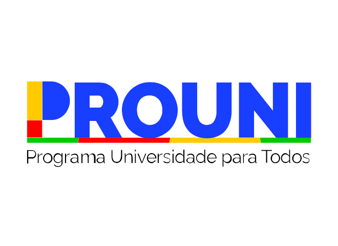

Programa Universidade para Todos (Prouni)

O que é o Prouni?
O Prouni oferece bolsas de estudo em instituições particulares de ensino superior para estudantes de baixa renda.
COMO FUNCIONA O PROUNI?
Destinado a candidatos brasileiros sem diploma de curso superior, que tenham participado da última edição do Exame Nacional do Ensino Médio (Enem), com no mínimo 450 pontos na média das notas e nota na redação que não seja zero.
Para concorrer à bolsa integral, o candidato deve comprovar renda familiar bruta mensal de até um salário mínimo e meio por pessoa. Para a bolsa parcial (50%), a renda familiar bruta mensal deve ser de até três salários mínimos por pessoa. Além disso, o candidato deve satisfazer a pelo menos uma das condições abaixo:
O processo seletivo do Prouni tem uma única etapa de inscrição. A inscrição, gratuita, é feita exclusivamente pela internet, na página do Prouni.
O candidato pode escolher, em ordem de preferência, até duas opções de instituição, curso e turno dentre as bolsas disponíveis, de acordo com seu perfil.
O candidato com deficiência ou que se autodeclarar indígena, preto ou pardo pode optar por concorrer a bolsas destinadas a políticas de ações afirmativas.
Durante o período de inscrição, o candidato pode alterar as opções. Será considerada válida a última inscrição confirmada.
Encerrado o prazo de inscrição, o sistema do Prouni classifica os estudantes de acordo com as opções e as notas obtidas no Enem. Os estudantes são pré-selecionados em apenas uma das opções de curso, observada a ordem escolhida no momento da inscrição e o limite de bolsas disponíveis.
Serão realizadas duas chamadas. A cada chamada, os candidatos pré-selecionados têm um prazo para comparecer à instituição de ensino e apresentar os documentos que comprovem as informações prestadas na ficha de inscrição. Para certificar-se da veracidade das informações prestadas, a instituição pode pedir ao estudante outros documentos que julgar necessários.
É permitida às instituições a realização de processo seletivo próprio dos pré-selecionados pelo Prouni. Essa informação é dada ao candidato no momento da inscrição. Nesses casos, as instituições que optarem por processo próprio de seleção devem explicar formalmente aos estudantes, no prazo máximo de 24 horas da divulgação dos resultados das chamadas, a natureza e os critérios de aprovação, os quais não podem ser mais rigorosos do que aqueles aplicados aos pré-selecionados em seus processos seletivos regulares. É vedada a cobrança de taxas para realização do processo seletivo próprio.
Ao final das duas chamadas, o candidato pode manifestar interesse em participar da lista de espera do Prouni. As bolsas eventualmente não preenchidas nas duas chamadas serão ocupadas pelos estudantes participantes da lista de espera que comprovarem as informações prestadas na ficha de inscrição.
Requisitos
- Ter feito o Enem mais recente.
- Ter alcançado pelo menos 450 pontos nas provas e não ter zerado a redação.
- Ter estudado em escola pública ou como bolsista integral em escola particular.
Estratégias para Participar
Pesquise com antecedência as universidades participantes. Faça simulações de notas de corte e acompanhe diariamente durante o período de inscrição.
Notas de Corte do Prouni 2024 (Ampla Concorrência: Mínima – Média – Máxima)
| Curso | Mínima | Média | Máxima |
|---|---|---|---|
| Medicina | 475,62 | 681,33 | 797,16 |
| Direito | 450,40 | 574,85 | 752,98 |
| Engenharia Civil | 450,38 | 560,39 | 724,86 |
| Psicologia | 450,02 | 584,64 | 750,08 |
| Enfermagem | 450,06 | 566,47 | 767,92 |
Dúvidas Frequentes
QUAL É A RELAÇÃO ENTRE O PROUNI E O ENEM?
Só pode ser candidato ao Prouni o estudante que participou da última edição do Enem e obteve no mínimo 450 pontos na média das notas do exame, além de nota na redação maior do que zero. Não são consideradas as notas obtidas nos exames anteriores. Os resultados do Enem são usados como critério na distribuição das bolsas de estudo, isto é, as bolsas são concedidas conforme as notas obtidas pelos estudantes no exame.
BASTA FAZER O ENEM PARA SE CANDIDATAR A BOLSAS DO PROUNI?
Além de ter feito o Enem e obtido no mínimo 450 pontos na média das provas e nota na redação maior do que zero, o candidato deve comprovar renda familiar bruta mensal, por pessoa, de até um salário mínimo e meio (bolsa integral) ou de até três salários mínimos (bolsa parcial 50%) e satisfazer a pelo menos uma das condições abaixo:
É PRECISO FAZER O VESTIBULAR DA INSTITUIÇÃO PARA CONCORRER A BOLSAS DO PROUNI?
O candidato a bolsas do Prouni não precisa fazer vestibular nem estar matriculado na instituição na qual pretende se inscrever. Entretanto, é permitido às instituições participantes do programa submeter os pré-selecionados a processo seletivo específico, isento de cobrança de taxa. Essa informação será dada ao candidato no momento da inscrição.
O QUE SÃO AS BOLSAS REMANESCENTES DO PROUNI?
Bolsas remanescentes do Prouni são aquelas que não foram ocupadas no último processo seletivo regular.
QUAL A DIFERENÇA ENTRE O PROUNI E O SISTEMA DE SELEÇÃO UNIFICADA (SISU)?
O Prouni é um programa do Ministério da Educação que oferece bolsas de estudo em instituições particulares de educação superior, em cursos de graduação e sequenciais de formação específica, a estudantes brasileiros sem diploma de nível superior. O Sistema de Seleção Unificada (Sisu) é o meio pelo qual instituições públicas de educação superior oferecem vagas a candidatos participantes do Enem.
Datas Importantes
- ENEM inscrições até 12/07
- Isenção ENEM até 24/05
- SISU – inscrições 22 a 25/07
- ProUni – inscrições 29/07 a 01/08
- FIES – inscrições 05 a 08/08